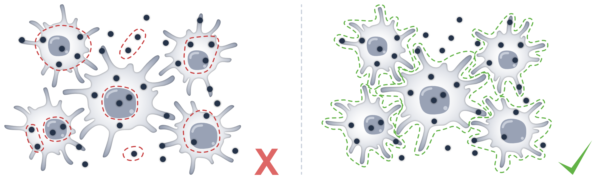
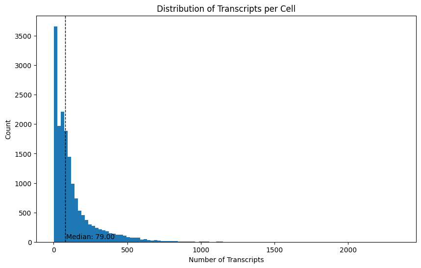
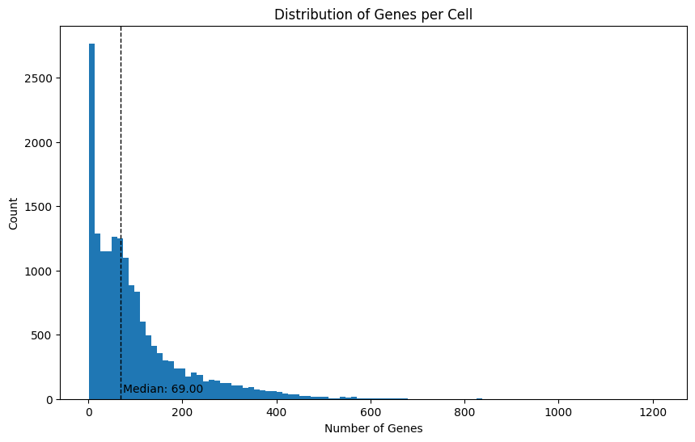
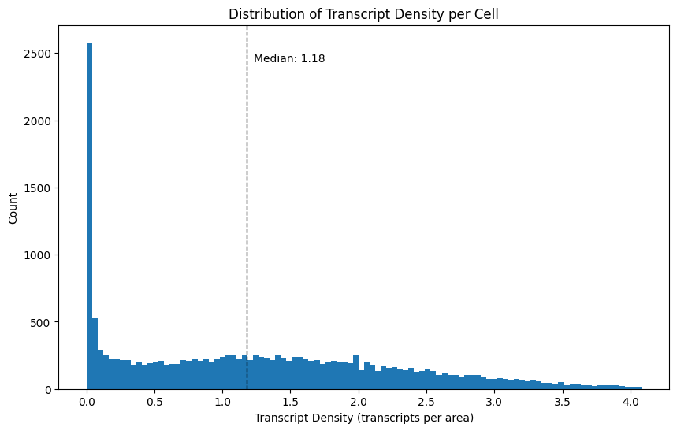
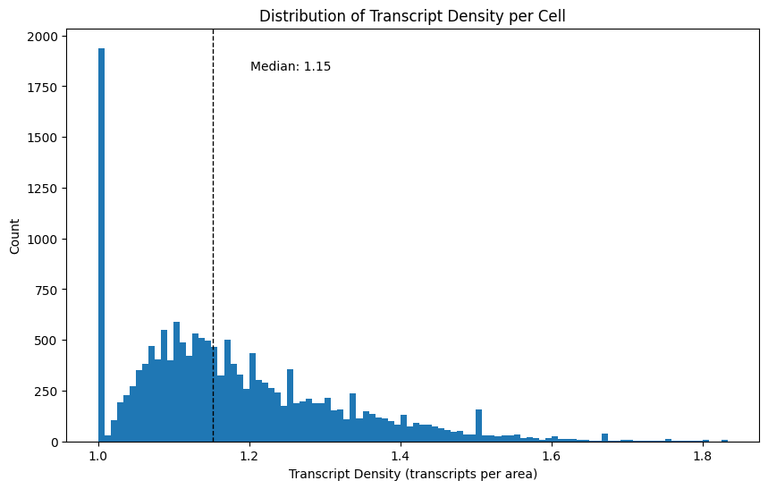
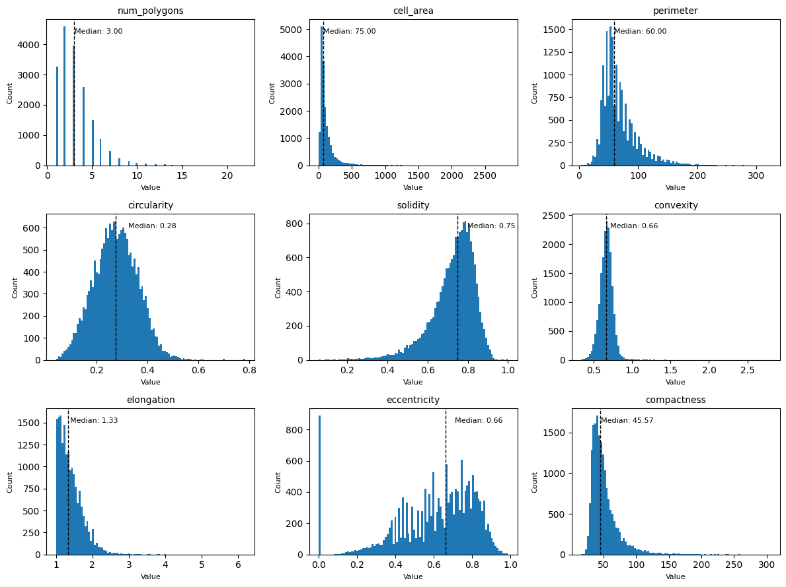

Module: Baseline Metrics#
When assessing the quality of a segmentation, the first thing one usually looks at are summary metrics such as the number of segmented cells, number of transcripts/genes per cell, the percentage of unassigned transcripts, the transcript density, and a variety of morphological features.

The baseline (bl) module contains several metrics that can help you to assess the quality of your segmentation. The methods all return their corresponding values or dataframes, and also write them into the spatialdata object.
To follow along with this tutorial, you can download the data from here.
[1]:
%load_ext autoreload
%autoreload 2
[2]:
import math
import matplotlib.pyplot as plt
import spatialdata as sd
import segtraq
segtraq.settings.n_jobs = -1 # Use all available CPU cores
sdata = sd.read_zarr("../../data/xenium_5K_data/proseg2.zarr")
# putting the spatialdata object into a SegTraQ constructor
# this has the advantage that we only need to set keywords like cell IDs or transcript IDs once
st = segtraq.SegTraQ(
sdata,
images_key="image",
points_cell_id_key="assignment",
points_background_id=2**32 - 1,
points_gene_key="gene",
tables_area_key=None,
tables_cell_id_key="cell",
shapes_cell_id_key="cell",
tables_centroid_x_key="centroid_x",
tables_centroid_y_key="centroid_y",
)
/g/huber/users/lazic/src/SegTraQ/.venv/lib/python3.13/site-packages/tqdm/auto.py:21: TqdmWarning: IProgress not found. Please update jupyter and ipywidgets. See https://ipywidgets.readthedocs.io/en/stable/user_install.html
from .autonotebook import tqdm as notebook_tqdm
/g/huber/users/lazic/src/SegTraQ/src/segtraq/SegTraQ.py:162: RuntimeWarning: No area column specified for tables. Area will be automatically computed from shapes.
validate_spatialdata(
/g/huber/users/lazic/src/SegTraQ/src/segtraq/utils.py:1860: UserWarning: Duplicate IDs detected in index 'cell_id' for shapes 'nucleus_boundaries'. Resetting and renaming index to `segtraq_id` to ensure uniqueness.
nucleus_shapes = _ensure_index(
/g/huber/users/lazic/src/SegTraQ/src/segtraq/SegTraQ.py:190: UserWarning: Filtering control and low-quality transcripts from the SpatialData object in-place. Set filter_kwargs={'inplace': False} to avoid modifying the original object.
sdata_new = _filter_control_and_low_quality_transcripts(
/g/huber/users/lazic/src/SegTraQ/src/segtraq/SegTraQ.py:190: RuntimeWarning: Cell IDs differ between assigned transcript points and the expression table. 0 cells occur only in points (e.g. []), and 971 occur only in the table (e.g. [np.int64(16386), np.int64(16390), np.int64(14347), np.int64(10253), np.int64(10254)]). Please check that the transcript assignments and `filter_kwargs` are consistent with how the expression table was generated.
sdata_new = _filter_control_and_low_quality_transcripts(
To get a first impression of the quality of the data, we can check how many cells there are in the data. We can also check how many transcripts were measured in total, how many genes they map to, and how many transcripts were not assigned to a cell.
[3]:
st.bl.num_cells()
[3]:
17885
[4]:
st.bl.num_transcripts()
[4]:
2189801
[5]:
st.bl.num_genes()
/g/huber/users/lazic/src/SegTraQ/src/segtraq/SegTraQ.py:1214: UserWarning: The number of genes differs between points (5095) and tables (5094). Example genes that are missed: ['HPV16-E7']. If these are control probes, please make sure to include them in the SegTraQ constructor. For example: SegTraQ(filter_kwargs={'control_prefixes': [...], 'control_genes': [...]}). Storing the number of genes from the points layer.
return bl.num_genes(
[5]:
5095
[6]:
st.bl.perc_unassigned_transcripts()
[6]:
2.0587258842241827
Next, let’s see how many transcripts were detected per cell. We can do this using the transcripts_per_cell() method.
[7]:
transcripts_per_cell = st.bl.transcripts_per_cell()
transcripts_per_cell.head()
[7]:
| assignment | transcript_count | |
|---|---|---|
| 0 | 3445 | 2345 |
| 1 | 1096 | 1777 |
| 2 | 2721 | 1458 |
| 3 | 2005 | 1407 |
| 4 | 2099 | 1314 |
We can plot the median and distribution of this to see how the number of transcripts differs across cells.
[8]:
# plotting the number of transcripts per cell
plt.figure(figsize=(10, 6))
plt.hist(transcripts_per_cell["transcript_count"], bins=100)
# adding a line for the median
plt.axvline(
transcripts_per_cell["transcript_count"].median(),
color="black",
linestyle="dashed",
linewidth=1,
)
plt.text(
transcripts_per_cell["transcript_count"].median() + 5,
50,
f"Median: {transcripts_per_cell['transcript_count'].median():.2f}",
color="black",
)
# adding labels and title
plt.xlabel("Number of Transcripts")
plt.ylabel("Count")
plt.title("Distribution of Transcripts per Cell")
plt.show()

We can also do the same thing for the number of genes per cell, since there are often multiple transcripts measured per gene.
[9]:
genes_per_cell = st.bl.genes_per_cell()
genes_per_cell.head()
[9]:
| assignment | gene_count | |
|---|---|---|
| 0 | 0 | 389 |
| 1 | 1 | 45 |
| 2 | 2 | 5 |
| 3 | 3 | 120 |
| 4 | 4 | 41 |
[10]:
# plotting the number of genes per cell
plt.figure(figsize=(10, 6))
plt.hist(genes_per_cell["gene_count"], bins=100)
# adding a line for the median
plt.axvline(
genes_per_cell["gene_count"].median(),
color="black",
linestyle="dashed",
linewidth=1,
)
plt.text(
genes_per_cell["gene_count"].median() + 5,
50,
f"Median: {genes_per_cell['gene_count'].median():.2f}",
color="black",
)
# adding labels and title
plt.xlabel("Number of Genes")
plt.ylabel("Count")
plt.title("Distribution of Genes per Cell")
plt.show()

Next to the number of transcripts per cell, we can also investigate the transcript density, which is computed as the number of transcripts divided by the cell area. Note that the background does not appear in this data frame.
[11]:
transcript_density = st.bl.transcript_density()
transcript_density.head()
[11]:
| cell | transcript_density | |
|---|---|---|
| 0 | 0 | 2.210744 |
| 1 | 1 | 0.888889 |
| 2 | 2 | 0.166667 |
| 3 | 3 | 2.173913 |
| 4 | 4 | 0.528090 |
[12]:
x = transcript_density["transcript_density"].dropna()
p99 = x.quantile(0.99)
x_clip = x[x <= p99]
plt.figure(figsize=(10, 6))
plt.hist(x_clip, bins=100)
# median from full distribution
med = x.median()
plt.axvline(med, color="black", linestyle="dashed", linewidth=1)
plt.text(
med + 0.05,
plt.ylim()[1] * 0.9,
f"Median: {med:.2f}",
color="black",
)
# adding labels and title
plt.xlabel("Transcript Density (transcripts per area)")
plt.ylabel("Count")
plt.title("Distribution of Transcript Density per Cell")
plt.show()

We can also compute the mean number of transcripts per detected gene per cell, which is computed by averaging per-gene transcript counts across genes observed in each cell. Note that only detected genes are considered and background transcripts are excluded.
[13]:
mean_transcripts_per_gene_per_cell = st.bl.mean_transcripts_per_gene_per_cell()
mean_transcripts_per_gene_per_cell.head()
[13]:
| assignment | mean_transcripts_per_gene | |
|---|---|---|
| 0 | 0 | 1.375321 |
| 1 | 1 | 1.066667 |
| 2 | 2 | 1.200000 |
| 3 | 3 | 1.250000 |
| 4 | 4 | 1.146341 |
[14]:
x = mean_transcripts_per_gene_per_cell["mean_transcripts_per_gene"].dropna()
p99 = x.quantile(0.99)
x_clip = x[x <= p99]
plt.figure(figsize=(10, 6))
plt.hist(x_clip, bins=100)
# median from full distribution
med = x.median()
plt.axvline(med, color="black", linestyle="dashed", linewidth=1)
plt.text(
med + 0.05,
plt.ylim()[1] * 0.9,
f"Median: {med:.2f}",
color="black",
)
# adding labels and title
plt.xlabel("Transcript Density (transcripts per area)")
plt.ylabel("Count")
plt.title("Distribution of Transcript Density per Cell")
plt.show()

Finally, let’s look at some morphological features, such as the cell area, circularity, elongation, etc. We can get those with the function morphological_features(). If you only want to compute certain features, you can select them with the features_to_compute argument. This can drastically reduce the runtime, as especially the features elongation and eccentricity can take a while to compute.
[15]:
morphological_features = st.bl.morphological_features()
morphological_features.head()
[15]:
| cell | num_polygons | cell_area | perimeter | circularity | solidity | convexity | elongation | eccentricity | compactness | |
|---|---|---|---|---|---|---|---|---|---|---|
| 0 | 0 | 2 | 242.0 | 102.0 | 0.292297 | 0.789560 | 0.706671 | 2.106796 | 0.880172 | 42.991735 |
| 1 | 1 | 1 | 54.0 | 46.0 | 0.320692 | 0.771429 | 0.667452 | 1.111111 | 0.435890 | 39.185184 |
| 2 | 2 | 3 | 36.0 | 44.0 | 0.233672 | 0.734694 | 0.617673 | 1.428571 | 0.714143 | 53.777776 |
| 3 | 3 | 1 | 69.0 | 46.0 | 0.409773 | 0.807018 | 0.787440 | 1.444444 | 0.721602 | 30.666666 |
| 4 | 4 | 1 | 89.0 | 60.0 | 0.310669 | 0.780702 | 0.656972 | 1.109589 | 0.433332 | 40.449438 |
Let’s plot all of the distributions in one plot using subplots.
[16]:
# exclude 'cell_id' from the features to plot
features = [f for f in morphological_features.columns if f != "cell_id"]
# define grid layout
num_features = len(features)
cols = 3
rows = math.ceil(num_features / cols)
# create subplots
fig, axes = plt.subplots(rows, cols, figsize=(cols * 4, rows * 3))
axes = axes.flatten()
for i, feature in enumerate(features):
ax = axes[i]
data = morphological_features[feature]
ax.hist(data, bins=100)
median_val = data.median()
ax.axvline(median_val, color="black", linestyle="dashed", linewidth=1)
ax.text(
median_val + 0.05,
ax.get_ylim()[1] * 0.9,
f"Median: {median_val:.2f}",
color="black",
fontsize=8,
)
ax.set_title(feature, fontsize=10)
ax.set_xlabel("Value", fontsize=8)
ax.set_ylabel("Count", fontsize=8)
# hide unused subplots
for j in range(i + 1, len(axes)):
fig.delaxes(axes[j])
fig.tight_layout()
plt.show()

Instead of measures per cell, we can also compute some metrics per gene. For example, we can see the percentage of how often a gene was not assigned to any cell. This can help to detect potential biases in our segmentation.
[17]:
perc_unassigned_transcripts_per_gene = st.bl.perc_unassigned_transcripts_per_gene()
perc_unassigned_transcripts_per_gene.sort_values(by="perc_unassigned", ascending=False).head()
[17]:
| total | unassigned | perc_unassigned | |
|---|---|---|---|
| gene | |||
| HPV16-E7 | 1 | 1 | 100.000000 |
| CIDEC | 169 | 105 | 62.130178 |
| GHR | 118 | 69 | 58.474576 |
| PLIN1 | 240 | 137 | 57.083333 |
| SLC1A1 | 22 | 12 | 54.545455 |
In our example, most transcripts were assigned to a cell. However, if you detected that a large number of transcripts were unassigned, you could follow up with a gene set enrichment analysis (GSEA) to look for specific biases.
Finally, we can check the anndata object to verify that all of our metrics are stored in there.
[18]:
sdata.tables["table"]
[18]:
AnnData object with n_obs × n_vars = 17885 × 5094
obs: 'cell', 'original_cell_id', 'centroid_x', 'centroid_y', 'centroid_z', 'fov', 'cluster', 'volume', 'scale', 'population', 'region', 'gene_count', 'transcript_count', 'transcript_density', 'mean_transcripts_per_gene', 'num_polygons', 'cell_area', 'perimeter', 'circularity', 'solidity', 'convexity', 'elongation', 'eccentricity', 'compactness'
var: 'total', 'unassigned', 'perc_unassigned'
uns: 'spatialdata_attrs', 'num_cells', 'num_transcripts', 'num_genes', 'perc_unassigned_transcripts'
Alternatively, all bl metrics can be computed in one run via run_baseline.
[19]:
st.run_baseline()
sdata.tables["table"].obs.head()
/g/huber/users/lazic/src/SegTraQ/src/segtraq/SegTraQ.py:1214: UserWarning: The number of genes differs between points (5095) and tables (5094). Example genes that are missed: ['HPV16-E7']. If these are control probes, please make sure to include them in the SegTraQ constructor. For example: SegTraQ(filter_kwargs={'control_prefixes': [...], 'control_genes': [...]}). Storing the number of genes from the points layer.
return bl.num_genes(
[19]:
| cell | original_cell_id | centroid_x | centroid_y | centroid_z | fov | cluster | volume | scale | population | ... | transcript_density | num_polygons | cell_area | perimeter | circularity | solidity | convexity | elongation | eccentricity | compactness | |
|---|---|---|---|---|---|---|---|---|---|---|---|---|---|---|---|---|---|---|---|---|---|
| 0 | 0 | acjlikbd-1 | 154.66340 | 1053.59360 | -0.115346 | Y5 | 8 | 1131.67400 | 1.0 | 540 | ... | 2.210744 | 2 | 242.0 | 102.0 | 0.292297 | 0.789560 | 0.706671 | 2.106796 | 0.880172 | 42.991735 |
| 1 | 1 | jaigfolp-1 | 348.67285 | 287.59875 | 0.524985 | X5 | 6 | 256.04938 | 1.0 | 47 | ... | 0.888889 | 1 | 54.0 | 46.0 | 0.320692 | 0.771429 | 0.667452 | 1.111111 | 0.435890 | 39.185184 |
| 2 | 2 | acmaeipl-1 | 720.20215 | 1218.87230 | 0.660745 | Y6 | 7 | 148.57190 | 1.0 | 5 | ... | 0.166667 | 3 | 36.0 | 44.0 | 0.233672 | 0.734694 | 0.617673 | 1.428571 | 0.714143 | 53.777776 |
| 3 | 3 | ippkogeb-1 | 877.44590 | 1707.41210 | -0.980020 | Z6 | 8 | 233.92108 | 1.0 | 179 | ... | 2.173913 | 1 | 69.0 | 46.0 | 0.409773 | 0.807018 | 0.787440 | 1.444444 | 0.721602 | 30.666666 |
| 4 | 4 | icelkgce-1 | 1253.77540 | 1426.49510 | 0.859675 | Y7 | 0 | 327.17487 | 1.0 | 39 | ... | 0.528090 | 1 | 89.0 | 60.0 | 0.310669 | 0.780702 | 0.656972 | 1.109589 | 0.433332 | 40.449438 |
5 rows × 24 columns
[20]:
sdata.tables["table"].var.head()
[20]:
| total | unassigned | perc_unassigned | |
|---|---|---|---|
| gene | |||
| A2ML1 | 46 | 2 | 4.347826 |
| AAMP | 615 | 5 | 0.813008 |
| AAR2 | 298 | 5 | 1.677852 |
| AARSD1 | 273 | 1 | 0.366300 |
| ABAT | 212 | 5 | 2.358491 |
Session Info#
[21]:
print(sd.__version__) # spatialdata
0.8.0